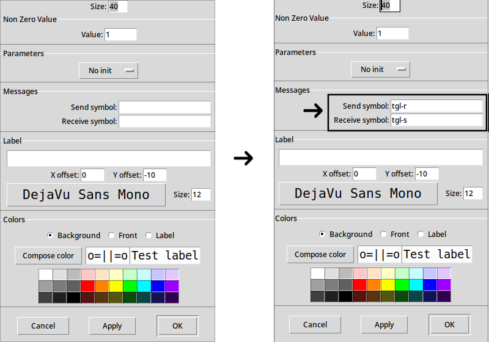

PureData Online: Step-by-Step Guide
This guide introduce step by step the process of compiling your PureData patches.
Installing Dependencies
To compile your patch, you need to install Git, Python, and pd4web. Below we have instructions for all the main plataforms, follow the steps for your plataform.
Git
-
Windows 11: If you are on Windows 11, you can easily install Git using the
wingetcommand. Open a Command Prompt or PowerShell window and run the following command:Bash-code
winget install Git.Git -
Windows 10: For Windows 10 you can install
wingetusing the Windows Store Install Winget. After installwinget, open a Command Prompt or PowerShell window and runwinget install Git.Git.Warning
Minor versions of Windows not support
wingetand are not supported by this documentation.
To install Git in Mac Os you have two options:
-
installer: To install Git using normal installer go to Git, search for Binary Installer, download and install it.
-
brew: To install Git using
brew, visit the Homebrew website, and follow their installation instructions for macOS. After installing Homebrew, open a Terminal and run the following command to install Gitbrew install git.
Bash-code
``` powershell
brew install git
```
On Fedora:
Bash-code
sudo dnf install git
On Ubuntu/Debian Based:
Bash-code
sudo apt install git
On Arch based:
Bash-code
sudo pacman -S git
Python
On Windows you can install Python like and ordirary software.
- Go to Python.org,
- Go to the bottom of the page and download:
Windows installer (64-bit). - Install it as an ordinary program.
or easily run.
Bash-code
winget install -e --id Python.Python.3.11
On MacOS you can install Python like and ordirary software.
- Go to Python.org,
- Go to the bottom of the page and download:
macOS 64-bit universal2 installer. - Install it as an ordinary program.
Or, if you has install brew, you can just run:
Bash-code
brew install python@3.11
Fedora
sudo dnf install python3.11
Ubuntu/Debian
sudo apt install python3.11
Arch
sudo pacman -S python3.11
pd4web
Close all the Terminals/Powershells/Cmds opened then open it again running python3 -m pip install pd4web or, for Windows, python -m pip install pd4web.
To test if it works you can run: pd4web --help.
It must install a lot of things. Wait for it. Finnaly run pd4web --help again, you must see something like:
Bash-code
usage: pd4web [-h] --patch PATCH [--html HTML] [--confirm CONFIRM]
[--clearTmpFiles CLEARTMPFILES] [--server-port SERVER_PORT]
[--initial-memory INITIAL_MEMORY] [--gui GUI] [--version]
Check the complete docs in https://www.charlesneimog.com/pd4web
etc...
Now you can compile your patches! If it not work, you can buy support in Ko-Fi.
Make your patch for Web
Here, I will explain some considerations for starting a new Project using pd4web.
Folder Structure
I recommend using the file structure shown below. Be careful with upper and lower case letters.
├─ PROJECT_FOLDER
└── Audios/
├── AllMyAudioFiles.wav
└── AllMyAudioFiles.aif
└── Libs/
├── pdAbstraction1.pd
└── pdAbstraction2.pd
└── Extras/
├── extrathings.png
└── mygesture.svg
└── MY_MAIN_PATCH.pd
-
In the
Audiosfolder, you should place audio files. -
In the
Libsfolder you store abstractions, text files, or any other relevant items. -
In the
Extrasfolder, you should place items that are not intended for PureData but will be utilized to enhance the website's appearance. For instance, I use this folder to store.svgfiles of my scores, which I then display in the piece work in progress Compiled I.
After you compile your patch, will be created in the ROOT of the project a file index.html, another file YOUR_PATCH_NAME.cfg, and a new folder called webpatch. The index.html will just redirect to the right html file that is inside webpatch folder. The YOUR_PATCH_NAME.cfg will save the versions of the libraries that you are using, the version of PureData, the version of libpd and the version of emscripten. And inside webpatch will be all the files used by the version of your patch.
├─ PROJECT_FOLDER
├── Audios/
├── AllMyAudioFiles.wav
└── AllMyAudioFiles.aif
├── Libs/
├── pdAbstraction1.pd
└── pdAbstraction2.pd
├── Extras/
├── extrathings.png
└── mygesture.svg
├── webpatch/
├── libpd.data
├── ...
└── libpd.wasm
├── MY_MAIN_PATCH.pd
├── MY_MAIN_PATCH.cfg
└── index.html
Rules to follow when making your patch
There is some rules that you need to follow to pd4web work properly.
RULE #1
Always use the library name in the object. So, don't type counter object, type cyclone/counter. You can also use declare -lib else for example. But all libraries declared in the PureData configuration will not be recognized.
This is how, for now, pd4web find the objects that are externals or embbedded in PureData. There is some automatic work around externals.
RULE #2
Avoid the use of Visual Objects.
Always avoid the use of visual objects. Visual arrays, for example will broke your patch. Because of many abstractions of else uses visual array, we replace then using array define myarray automatically, but I suspect that another visual objects should not work. So, don't use then.
Compiling the patch
Here I explain the steps to convert your .pd patch to .wasm file. The .wasm file will be loaded in the browser.
pd4web command line
To convert your patch you must use pd4web in the terminal. To set configurations for pd4web must use some of the flags descrited below:
--patch-
Define your patch name. For example,
--patch mypatch.pd --html- Define where is the
index.htmlpage. If not provided,pd4webwill use the default page.--html index.html. --confirm- There is some automatic way check if the external is correct, but it is not always accurate. If you want to confirm if the external is correct, use this flag. For example,
--confirm True. --server-port- If you want see your patch running in the web browser after the compilation process, you can use this. Normally we use the port number 8080, for example:
--server-port 8080. --initial-memory- If you have a big patch, maybe you will need more that
32MBof memory, to use more memory set it using--initial-memory 64, for example. --replace-helper- Replace the
helpers.jsfile, wherepd4webdefines functions that are called after the load ofPureDatais finished. Replace the icons for sound in/off. --version- Show the version of
pd4web.
For example, to compile a big patch called mygreatpiece.pd you must run pd4web --patch mygreatpiece.pd --initial-memory 64.
Common Browser Console Erros
After you compile your patch, you should check if there is some error in the browser console, use:
- Ctrl+Alt+I or .
- Cmd+Alt+I .
Below we show some of the common erros that we find when compiling our patches.
Bash-code
Uncaught RuntimeError: Aborted(OOM). Build with -sASSERTIONS for more info.
at abort (libpd.js:1:12855)
at abortOnCannotGrowMemory (libpd.js:1:116480)
at _emscripten_resize_heap (libpd.js:1:116583)
at libpd.wasm:0x2c8e6
at libpd.wasm:0x3d5f
at libpd.wasm:0x1f204
at libpd.wasm:0x3044
at libpd.wasm:0x3071
at libpd.wasm:0xae4dd
at libpd.wasm:0x18244
To solve this, you must run pd4web with the flag --initial-memory 64 or a bigger number.
To solve this, you must check all the paths used by PureData. It is important to say that, objects like readsf~ are not able to search from paths declared by declare -path myfolder. So, if your audio files are inside Extra, you can't use declare -path Extra to open the files. You must send a message with open Extra/myaudiofile.wav. Something like open myaudiofile.wav will not work.
This is a big problem, it means that you are not using a https server. Because of security, we can use some features of browser without being in a secure enviroment. So if you are putting you website in a http server, Shared Array will be not defined. To solve this search how to use https to host your website.
About User Interfaces
Thanks to the work of Zack Lee, pd4web has a basic patch User Interface that can render tgl, vsl, hsl, vu, bng, nbx, vradio, hradio, cnv and text (comment).
You must set what do you want to render by configure receivers and senders in the objects properties. Check the image below, where I configure a tgl (toggle GUI object) to be rendered:

If you don't want to use this GUI you must to code the GUI yourself. This can be hard for beginners. I did some work with GUI in Canticos de Silício (VexFlow), Projeto (p5js), and Algorithm I (HTML and CSS).
Receiving data from PureData
To get some data from PureData you must first send the data using send or s object. To differentiate the data that you send inside your own patch and the things that you want to send to web enviroment we use the ui_ identifier. For example, if you use s mygain the values sent to mygain will be not avaible in the web enviroment. But, if you use s ui_mygain or send ui_mygain you will be able to get this data from the Web Enviroment.
To get this data you use these JavaScript snippet.
const value = window.pd4webGuiValues['ui_mygain'];
Sending data to PureData
To make some trigger or change some parameter like gain in your patch you must use the sendToPureData function. It is part of the main.js script provide with pd4web. To receive the data you must use receive or r with the same name specified with function sendToPureData.
Check the examples:
sendToPureData("float", 0.7);
sendToPureData("list", [1, 2, "test"]);
sendToPureData("symbol", "myword");
sendToPureData("bang", "bang");
to receive this data you must create r float, r list, r symbol or r bang.
Put the patch online
Once you compile the patch successfully, the last step is to put it online. You have some options, and the easy and free way is to upload all files in a repository in GitHub and make it available.
- First, you must download VsCode.
- If you don't have a GitHub account, make it on Github Sign In.
- Enter in you Github account using VsCode. You can get help using this Youtube Video.
The final step is to put it online. You have a lot of options, the easy way, if you already have a website, is to upload index.html and the folder webpatch in the ROOT where are your patch.
If you don't have any website, you can use the free github pages. It provides a website with the <yourusername>.github.io, for example, my user name is charlesneimog so my website will be charlesneimog.github.io. If you are one completly noob, you can use VsCode to do that. See the video below:
I will upload one video soon!
I hope that is can be usefull.